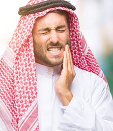
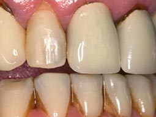

ليس عليك زيارة أطباء الأسنان بعد الآن! سأخبرك عنها معجون أسنان بتأثير مماثل لحشو الأسنان
مرحبا بالجميع! يشارك العديد من الأشخاص الاكتشافات الجديدة في مختلف المجالات، لذلك قررت أن أشارككم ما وجدت. هل سمعت عن معجون أسنان بتأثير الحشو؟ - هذا الشيء لا غنى عنه اليوم. سأخبركم أكثر عنه.
 بدأت أعاني من مشاكل في أسناني في طفولتي. كانت الزيارة الأولى لطبيب الأسنان فظيعة: طبيب الأسنان الذي ذهب إليه كان حديث التخرج. كانت يديه ترتجف، وبدلا من حفر السن الذي يعاني من التسوس حفر أخرى صحية، وما جعل الأمر أسوأ انه لمس اللثة عن طريق الخطأ، ما تسبب في سيل الدم في كل مكان. في ذلك اليوم قررت ألا أذهب إلى طبيب الأسنان مرة أخرى.
أسناني لم تزعجني حتى سن السابعة عشر، لذلك يمكن أن أكون محظوظ في هذا الصدد. ولكن بعدها بدأت في التدخين مما أثر على أسناني. بدأت الواحدة تلو الأخرى في التسوس، ولكن كنت لازلت أتذكر ذلك الشعور المرعب الذي وقع لي في طفولتي خلال زيارة طبيب الأسنان. كان من الأسهل والأبسط أن تكون تحت تأثير المخدر.
 وصلت إلى نقطة عندما كنت أشعر بالخجل من رؤية أسناني الرمادية والصفراء. بدأت أعاني من المنتجات الساخنة والباردة - كان رد فعل أسنان سئ ومؤلم جدا.
وبالطبع، الرائحة - كانت المشكلة الأكبر. بدأ الطعام يعلق في الشقوق والتجاويف - وأنتم تعرفون كيف يمكن أن تصبح رائحة الفم في هذه الحالات. اضطررت لتغطية فمي باستمرار بيدي.
وذات مرة واحدة التقيت مع أحد أصدقائي القدامى في المقهى. بدا رائعا: بدلة فاخرة، ساعة غالية الثمن، لكن ما جذب انتباهي بشكل خاص هو أسنانه البيضاء الثلجية. ابتسامة هوليود، لا شك في ذلك.
ثم ... وقع ما كنت أخاف منه. عندما كنت آكل سلطتي، كان جزء من أسناني الأمامية مكسورًا. لاحظني رفيقي في الحال، لكن ما أدهشتي، أنه كان لديه رد فعل مناسب للغاية.
أخبرني أنه كان يعاني من مشاكل في أسنانه طوال حياته أيضاً، اعتاد أن يمضي أياماً في عيادة طبيب الأسنان. في الآونة الأخيرة، نصحه طبيب أسنانه بمعجون أسنان جديد Denta Seal .
المختلف في معجون الأسنان هذا أنه يحتوي على مكون فريد - جسيمات نانومترية من هيدروكسيلاباتيت، التي
- تخترق مينا الأسنان و تعمل على إصلاح الشقوق والمناطق المتضررة؛
- ملء المينا بالمعادن، وبالتالي منع ظهور التسوس.
- تبييض الأسنان والاندماج في المينا، حماية الأسنان من الأصفرار.
هذه الأمور أكدت لي أنه يستحق التجربة. طلبت Denta Seal من الموقع الرسمي، لا أعتقد أنه يباع في أي مكان آخر. وغسلت به أسناني تماماً كالعادة، مرتين يومياً. فاجأني قوامه - إذ إنه أكثر كثافة، وليس مثل معجون الأسنان عادي، كما إنه ينتج الكثير من الرغوة والطعم جيد.
لاحظت في أسبوع أن أسناني أصبحت أكثر بياضاً، واختفت الشقوق الصغيرة كما لو أنها قد تم إصلاحها بأنفسها. يمكن أن آكل الآيس كريم أو التفاح دون الشعور بأي نوع من الانزعاج. لم يكن هناك مزيد من رائحة الفم الكريهة. أستطيع أخيرا التواصل مع الناس بشكل طبيعي، دون تغطية فمي. شعرت كما لو كنت شخصًا آخر.
في شهر واحد أصبحت أسناني بيضاء، دون عيب واحد. اختفت جميع البقع الداكنة والشقوق الكبيرة. حسنا، ليس هناك فائدة من إخباركم بكل هذا، فقط جربوه بأنفسكم.
بالتاكيد، Denta Seal أكثر تكلفة بعض الشيء، ولكن النتيجة لا يمكن مقارنتها بأي شيء.
لقد جربته والآن أستخدم فقط معجون الأسنان هذا. أسناني تبدو بيضاء ولا يوجد شروخ، أو بقع. أنصح الجميع به
أنا أيضا كنت خائفة من أطباء الأسنان منذ أن كنت طفلة صغيرة، الأسنان في حالة سيئة جدا، ولكني أتحمل الألم حتى حتى لا أذهب إلى طبيب الأسنان. يجب أن أجرب معجون الأسنان هذا.
هل حقا يملء جميع شقوق الأسنان؟ لابد أن أجربه. يبدو رائع.
قريباً سوف يكون معجون الأسنان هذا معروفًا في جميع أنحاء العالم، ومن المرجح أن يرتفع سعره، لذا من الأفضل طلبه الآن.
سألت طبيب أسناني، ولكنه لا يعرف شيئًا عن معجون الأسنان هذا.
قرأت في مكان ما أن هذا المعجون صممه العلماء منذ عدة سنوات. في البداية كان لديهم بعض المتاعب لأن الصيغة صعبة. وأخيرا في العام الماضي استطاعوا انتاجه. كنت أستخدم Denta Seal لمدة 6 أشهر، لم يكن لدي أبداً أسنان صحية كهذه.
نعم، لا يقول أطباء الأسنان شيئًا عن معجون الأسنان هذا لأنه غير مربح لهم، سيبدأون في فقد عملائهم. إذا بدأ الجميع في استخدامه، فسيقوم الأشخاص بالذهاب إلى أطباء الأسنان في الحالات الأكثر خطورة فقط.
لحسن الحظ، لدي جينات جيدة ولم أواجه مشاكل في أسنان. أمي في سن الستين وقد ذهبت إلى طبيب الأسنان مرة واحدة فقط في حياتها.
من اين استطيع شراءه؟ لا يباع في المتاجر، أليس كذلك؟
يباع فقط على الموقع الرسمي. إذا رأيتها في مكان آخر، معظمها مزيف.
عائلتنا كلها تستخدم فقط Denta Seal . دفعت أطفالي وزوجي لاستخدامه. لا أحد لديه مشاكل مع الأسنان.
يمكن للأطفال أيضا استخدام هذا المعجون؟ ابني عنده 12 سنة، نذهب إلى طبيب الأسنان في العادة. الآن، يخشى الذهاب إلى العيادة. لا أعرف كيف أصبحت أسنان سيئة بهذا الشكل.
12 سنة، يمكنه بالتأكيد استخدامه. ولكن بالتأكيد لا ينصح به للأطفال الصغار. ابنتي في العاشرة من عمرها، تستخدم فقط عندما أشتري معجون أسنان عادي، تقول "ماما، هذا المعجون ليس صحي".
طلبت Denta Seal في الامس. سنرى ما إذا كانت فعال بالفعل كما وصفت هنا. سأخبركم بتجربتي